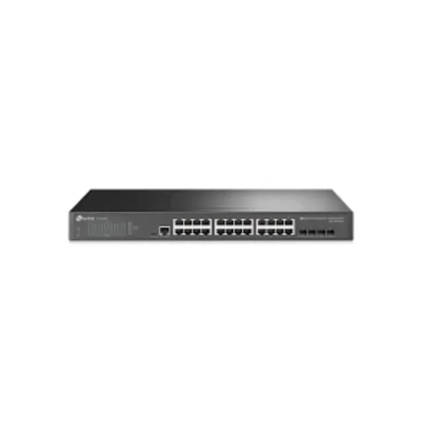
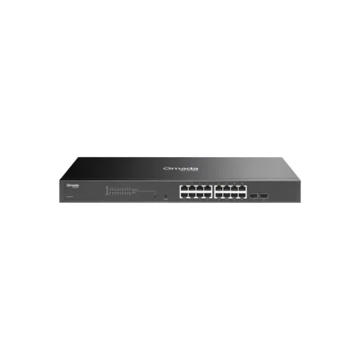
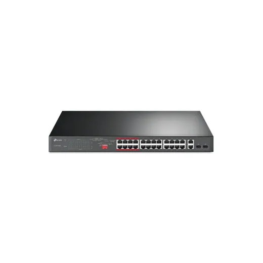
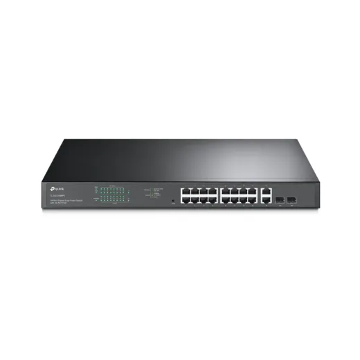
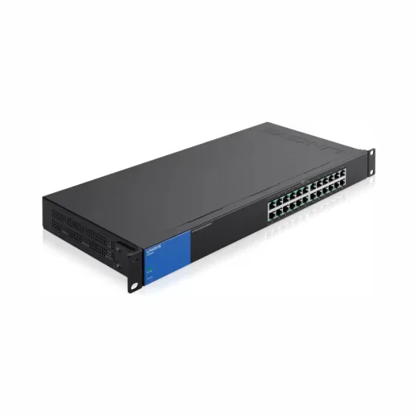
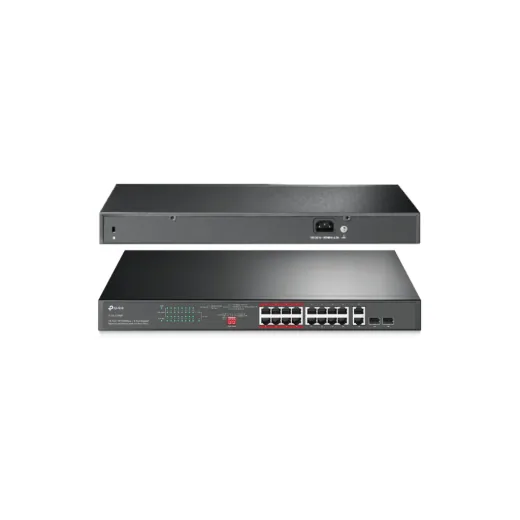
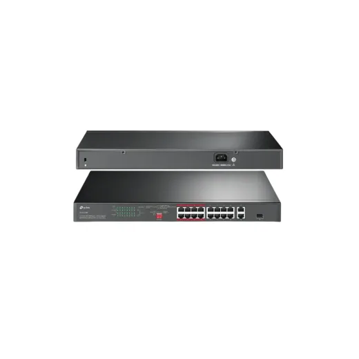
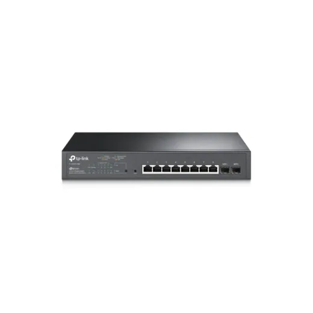

Inicio › Otros de tecnología y hogar

Puertos · Modelo TLSG3428
Switch de 24 Puertos Gigabit L2+ Administrable con 4 SFP Slots TPLINK JETSTREAM TL-SG3428
L 5,795
En Sycom
Precio en cada tienda
| Tienda | Precio | Antes | Disponibilidad | |
|---|---|---|---|---|
| Sycom | L 5,795 | — | Disponible | Ver en tienda › |
Precios referenciales tomados de cada tienda el 14 de noviembre de 2026. El precio válido es el que muestra la tienda al comprar.
Otros otros de tecnología y hogar Puertos

Switch de 16 Puertos Gigabit POE + 2 SFP TPLINK OMADA JetStream TL-SG2218P Rackeable POE 150WL 5,895En Sycom Switch de 16 Puertos Linksys LGS116P 8POE Gigabit Desktop PoE+L 5,500En Sycom
Switch de 16 Puertos Linksys LGS116P 8POE Gigabit Desktop PoE+L 5,500En Sycom
Switch de 24 Puertos 10/100 POE+ Max 250W + 2 SFP TPLINK TL-SL1226PL 5,495En Sycom
Switch de 18 Puertos Gigabit Smart con 16 Puertos POE+ 2SFP Max 250W +SFP SLOT TPLINK TL-SG1218MPEL 6,200En Sycom
Switch de 24 Puertos Linksys LGS124P Gigabit POE 120W RackeableL 6,495En Sycom
Switch de 16 Puertos 10/100 POE+ Max 250W TPLINK Jetstream TL-SL1218MPL 4,995En Sycom
Switch de 16 Puertos 10/100 POE + 2Gibabit Max 30W TPLINK TL-SL1218PL 4,600En Sycom
Switch de 10 Puertos Gigabit Smart con 8 Puertos POE+ 2SFP Max 150W TPLINK Jetstream TL-SG2210MPL 4,250En Sycom